KASHGAR · XINJIANG39.4716°N 75.9888°EBEIJING TIME --:--:--
Xinjiang, China · An investigation
Break Their Roots
Since 2017, an estimated one million or more Uyghurs have been detained in Xinjiang. Leaked documents, court records and the testimony of separated families reveal a campaign aimed at an entire people's identity, and a world that has failed to stop it.
By Elliot Thevathasan · Year 10 Global Politics · 31 October 2026
Id Kah Mosque, Kashgar. Photo: David Stanley, CC BY 2.0
Break their lineage, break their roots, break their connections, and break their origins.
Maisumujiang Maimuer, Chinese religious affairs official, 10 August 2017. Quoted by Human Rights Watch (2021).FILE 01Background
A people, and the identity under attack
The Uyghurs are a Muslim ethnic group whose homeland is the Xinjiang Uyghur Autonomous Region, in China's far west. Their relationship with Beijing has been strained for decades; as Amnesty International (2021, p. 3) states, For decades, many Uyghurs have experienced systematic ethnic and religious discrimination in Xinjiang.
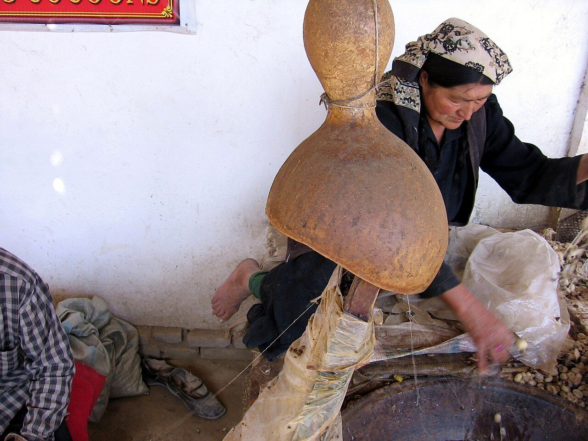
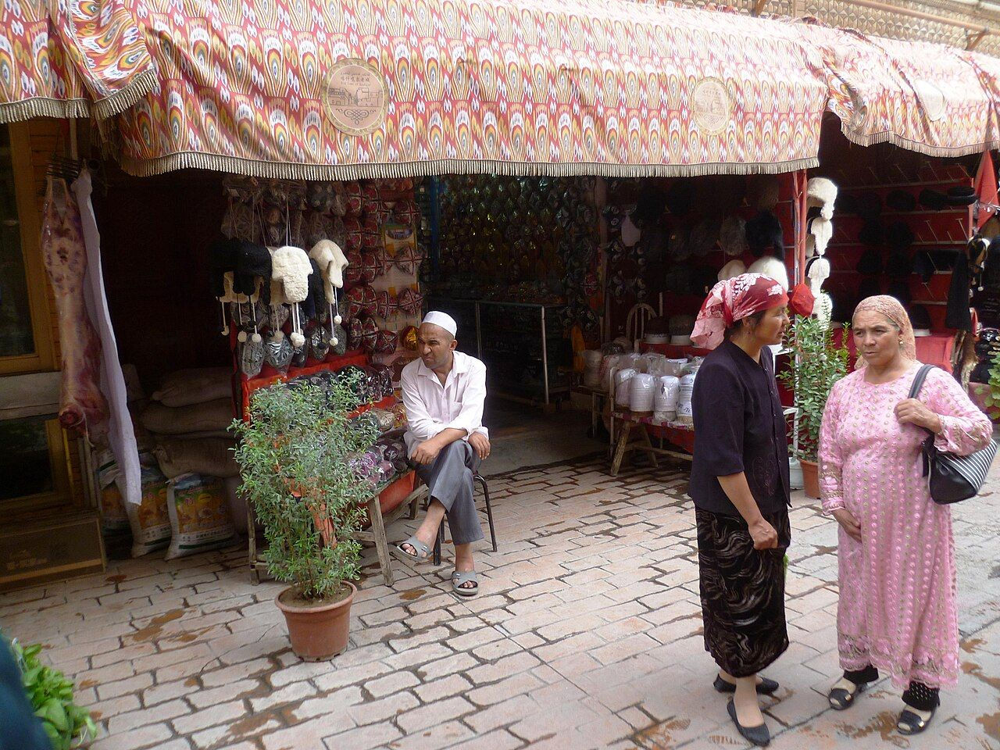
Left: unwinding silk at an atlas silk workshop in Hotan, Xinjiang. Photo: Colegota, CC BY-SA 2.5. Right: Kashgar's old town, 2017. Photo: Radosław Botev, CC BY 3.0. Both via Wikimedia Commons.
According to the BBC (2022), Anti-Han and separatist sentiment rose in Xinjiang from the 1990s, sometimes flaring into violence. In 2009, about 200 people died in clashes that Beijing blamed on Uyghurs who wanted their own state. China still insists that Uyghur militants are waging a violent campaign for independence; however, it is accused of exaggerating the threat in order to justify repression of the Uyghurs(BBC, 2022).
The discrimination predates the threat Beijing now cites. It began decades before China declared its People's War on Terror in 2014, which demonstrates that counter-terrorism cannot fully explain what followed.
FOOTAGE · 2009Ürümqi, July 2009: armed police, crowds and burning buildings during the violence in which about 200 people died. Video: Voice of America news report (excerpt, muted), public domain, via Wikimedia Commons.
Anti-Han and separatist sentiment rises in Xinjiang.
About 200 people die in clashes in Xinjiang.
China declares a "People's War on Terror"; police presence and surveillance expand.
Surveillance spreads rapidly. Late in the year, authorities begin confiscating Uyghurs' passports.
Mass detention begins. Zhu Hailun approves a secret telegram on how the camps should be run.
The China Cables leak exposes the camp telegram and court records.
Four Uyghur children are seized in Shanghai while trying to join their parents in Italy.
The EU, UK, Canada and US impose coordinated sanctions on Xinjiang officials.
Human Rights Watch concludes China is committing crimes against humanity.
The US Uyghur Forced Labor Prevention Act takes effect.
The UN human rights office finds abuses that may constitute crimes against humanity.
The UN Human Rights Council votes against even debating that report.
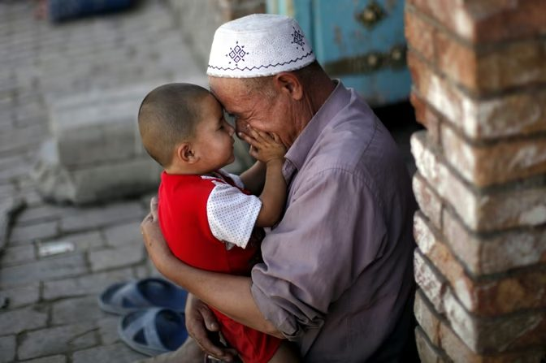
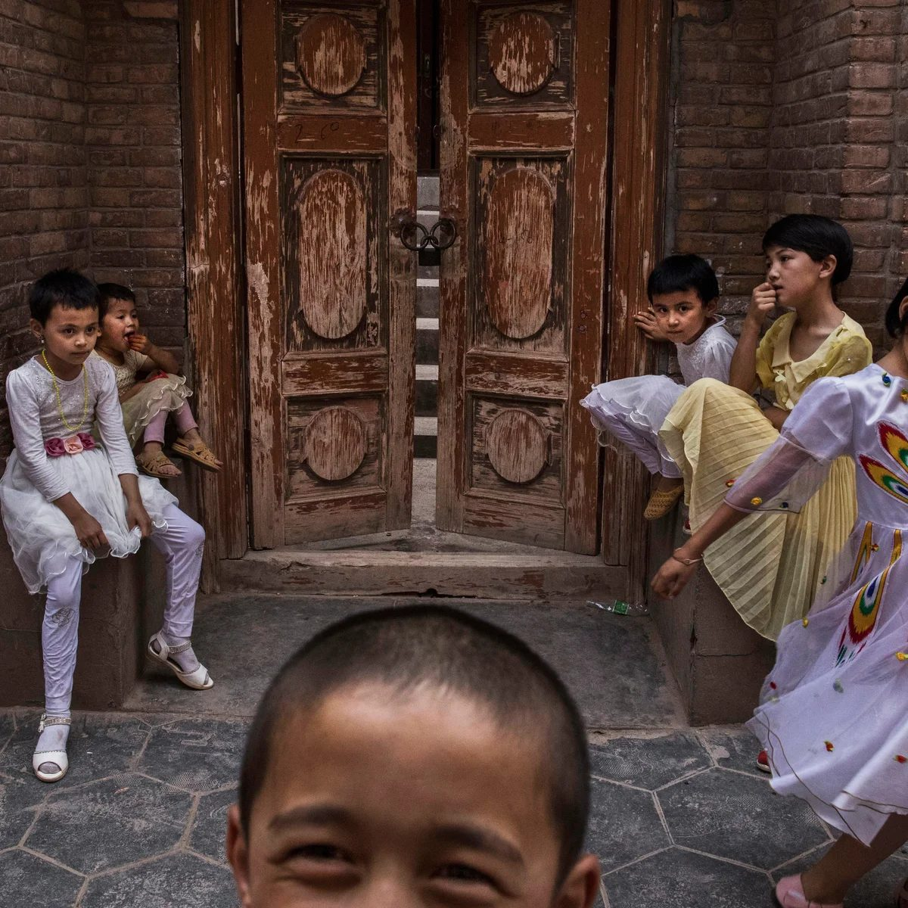
Two generations of Uyghurs. A Chinese official called for breaking their "lineage" and their "roots": the bond between grandparents, parents and children that carries Uyghur language, faith and culture.
1,000
people detained
Each dot represents 1,000 people
The scale
This dot represents 1,000 people.
From 2017
Amnesty International estimates that one million or more people have been arbitrarily detained in 'transformation-through-education' or 'vocational training' centres in Xinjiang(2021, p. 3).
That is a thousand dots.
The facilities
Human Rights Watch reports they are held in 300 to 400 facilities, including political education camps, pretrial detention centres and prisons (2021).
The grid now splits into 350 blocks, the midpoint of that estimate.
Where the camps are
Suspected detention facilities stretch across the whole region
EVIDENCE · MAP
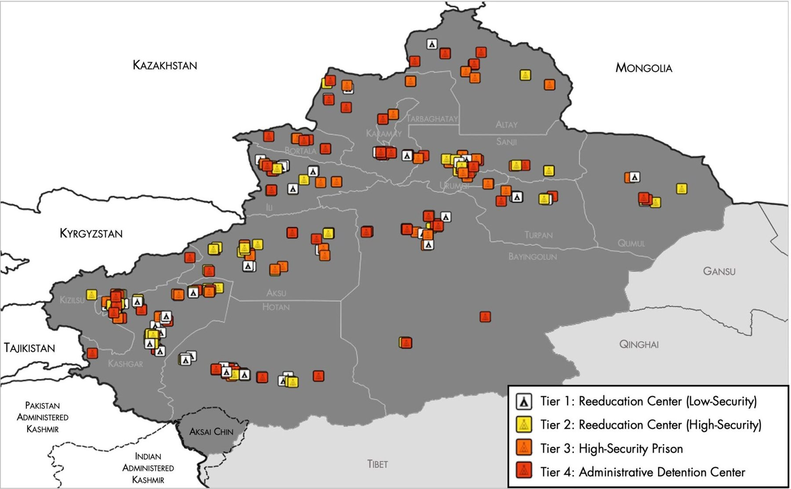
Suspected re-education centres, prisons and detention centres in Xinjiang, by security tier. Map: US National Geospatial-Intelligence Agency, using data from the Australian Strategic Policy Institute (2021). Public domain, via Wikimedia Commons.
Detention is only the most visible layer. For the Uyghurs who remain at home, the state's control reaches into ordinary daily life; the graphic below illustrates what the sources describe.
2014
Since 2014, the region has witnessed a greatly expanded police presence and fallen under a heavy blanket of surveillance as part of China's publicly declared 'People's War on Terror'(Amnesty International, 2021, p. 3).
Checkpoints
In 2016, surveillance and social control measures began spreading rapidly(Amnesty International, 2021, p. 3). Late that year, authorities began confiscating passports, sealing Uyghurs inside the region.
Cameras
Xinjiang is now covered by a pervasive network of surveillance, including police, checkpoints, and cameras that scan everything from number plates to individual faces(BBC, 2022).
The front door
According to Human Rights Watch, police are also using a mobile app to monitor people's behaviour, such as how much electricity they are using and how often they use their front door(BBC, 2022).
Even a front door has become a matter of state interest.
Under UN instruments, the target is violent extremism. The UN human rights office found that Chinese law and policy consistently refer to 'extremism' generally, without the critical qualifying adjective 'violent'(OHCHR, 2022, para. 23).
Xinjiang's de-extremification regulation then lists what counts. Among its prohibited primary expressions of extremification:
"irregular beards"
"name selection"
Beijing has therefore weaponised the definition itself; ordinary expressions of Uyghur and Muslim identity can be prosecuted as extremism.
FILE 03The courts
Ten years for urging colleagues to pray
Human Rights Watch (2021) reports that Chinese courts have sentenced Turkic Muslims to years in prison merely for sending an Islamic religious recording to a family member or downloading e-books in Uyghur. One sentencing document published in the China Cables reveals how this works in practice.
China Cables · Case summary
Defendant
A Uyghur worker at a sandstone factory, Qakilik County
What he did
In December 2016, urged his colleagues to pray
Crime
"Inciting ethnic hatred and ethnic discrimination"
Sentence
10 years in prison, plus 5 years' deprivation of political rights (9 August 2017 to 8 August 2027)
10 YEARS
VERDICT
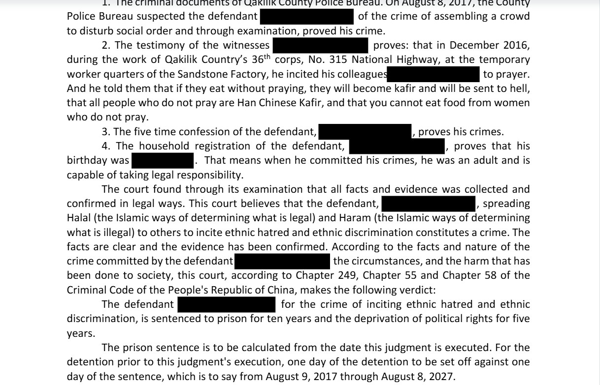
Part of the verdict, in the English translation released with the China Cables. Names are redacted. Source: ICIJ (2019b).
The court's reasoning is explicit. It ruled that the defendant's spreading Halal (the Islamic ways of determining what is legal) and Haram (the Islamic ways of determining what is illegal) to others to incite ethnic hatred and ethnic discrimination constitutes a crime(ICIJ, 2019b).
The case illustrates the superficial 'crimes' that Chinese courts attribute to extremism; moreover, it demonstrates the suffocating repression of freedom of speech and religion in Xinjiang.
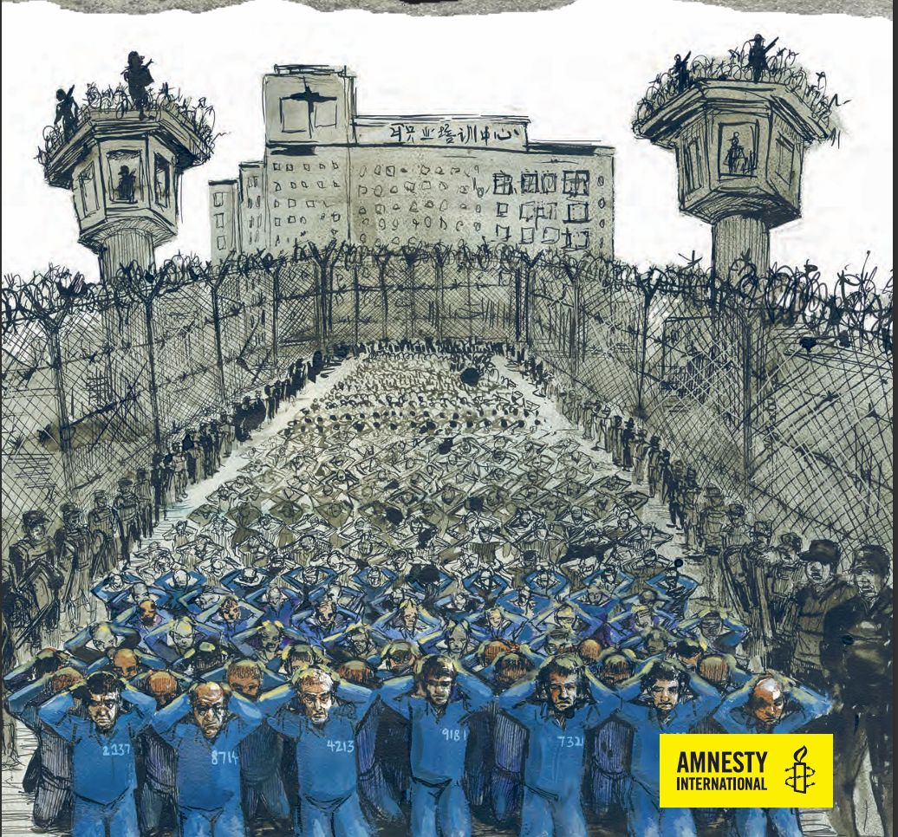
An artist's depiction of a Xinjiang detention camp. Illustration: Amnesty International.
FILE 04Inside the camps
The telegram
Detainees have been subjected to various forms of torture and ill-treatment, including political indoctrination and forced cultural assimilation(Amnesty International, 2021, p. 3). A secret telegram approved in 2017 by Zhu Hailun, then deputy secretary of Xinjiang's Communist Party and the region's top security official, sets out how that assimilation was to be run.
Secret · TelegramExcerpts · English translation
“…the national language (Mandarin) should be gradually used in daily life to communicate…”
“Maintain monthly assessments, and calculate monthly and annual total scores, and record it in the student's school files…”
“…link it directly to rewards, punishments, and family visits.”
Source: China Cables, ICIJ (2019a)
LEAKED
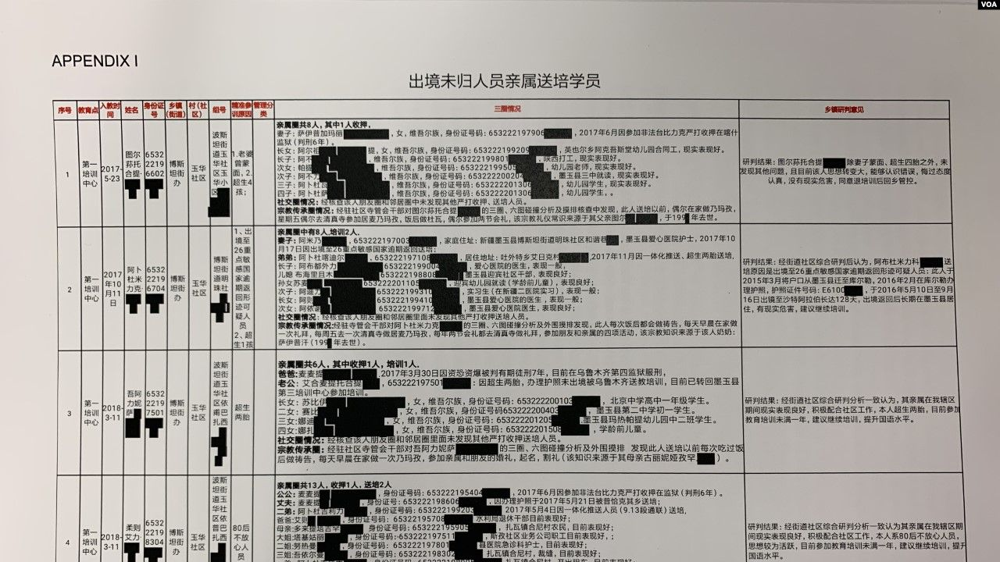
More leaks have followed. Pictured: the first, redacted page of the "Karakax List", another leaked Xinjiang government document, in 2020. Photo: VOA, public domain.
The telegram calls the detainees 'students'. It demonstrates that they are deliberately alienated from the Uyghur language and culture; moreover, it reveals that their 'transformation' is quantified.
Every monthAssessment
Every yearTotal score recorded in the 'student' file
Linked toRewards, punishments and family visits
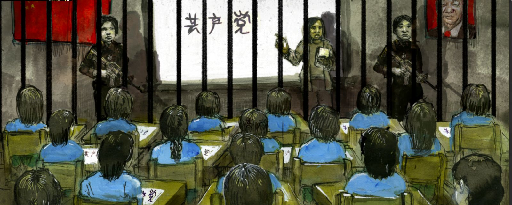
An artist's depiction of political indoctrination in a camp classroom. Illustration: Amnesty International.
The most devastating impact of the repression is the separation of families. With passports confiscated, many parents fled while they still could, planning to bring their children out later. The detention campaign has made it nearly impossible for their children to leave China to reunite with them abroad(Amnesty International, 2021, p. 3). This is what happened to one family.
A road through Bayingol, Xinjiang, 2018. Xinjiang is vast; Kashgar, the children's home, lies about 5,000 km from Shanghai. Video: Karl Osj. G, CC BY-SA 4.0, via Wikimedia Commons.
2016
Mihriban Kader and Ablikim Memtinin fled to Italy, leaving their four children behind in Kashgar.
June 2020
Their four children, aged 12 to 16, travelled about 5,000 km on their own from Kashgar to Shanghai to apply for visas to join their parents (Amnesty International, 2021, p. 4).
The consulate
At the Italian consulate, a Chinese guard came over and threatened to call the police if they did not leave(Amnesty International, 2021, p. 5).
24 June 2020
On 24 June, all four were seized by the police at their hotel in Shanghai and taken back to an orphanage and boarding school in Kashgar(Amnesty International, 2021, p. 5).
According to their parents, the children had valid passports and Italy's approval.
Parents cannot go back.
Children cannot get out.
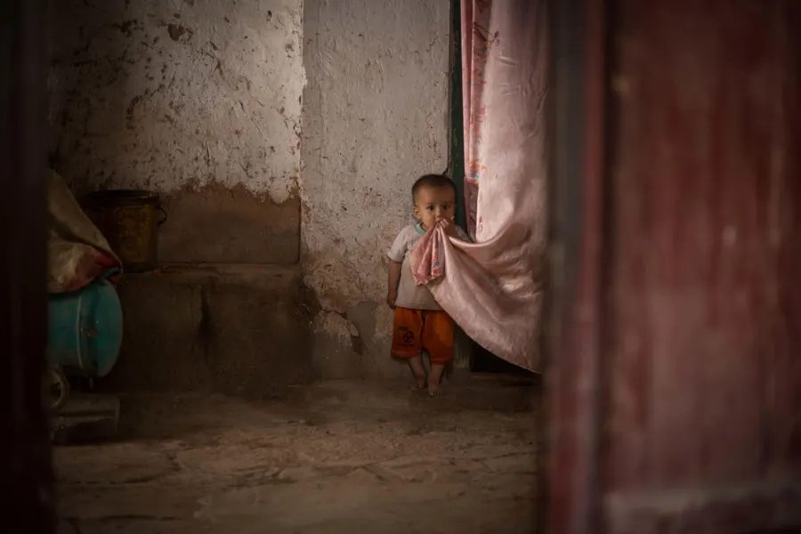
A Uyghur child at home. Parents abroad believe children left behind have been taken to state-run "orphan camps" or boarding schools (Amnesty International, 2021, p. 4).
When parents asked Chinese embassies for help, they were told only to go back to Xinjiang(Amnesty International, 2021, p. 6), where they would likely be detained. The repression also reaches those who escaped, as Beijing uses relatives at home as leverage.
“The safety of our family depends on you.”
Dilnur's sister, to Dilnur, a Uyghur mother living abroad (Amnesty International, 2021, p. 8)
“It feels like I lost my heart and I lost my life.”
Meripet Metniyaz, after losing contact with her children (Amnesty International, 2021, p. 12)
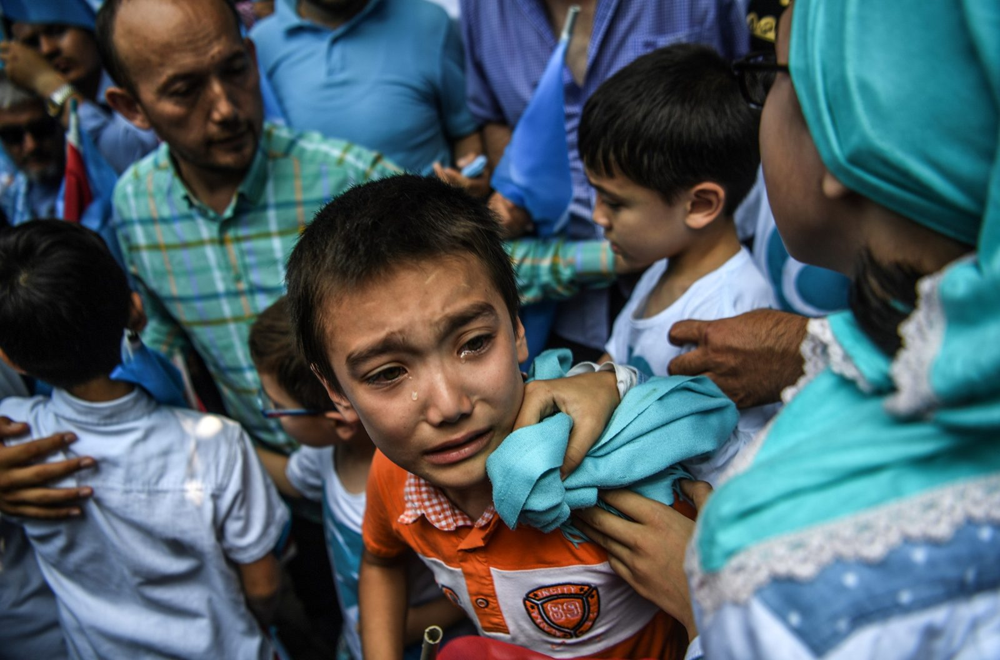
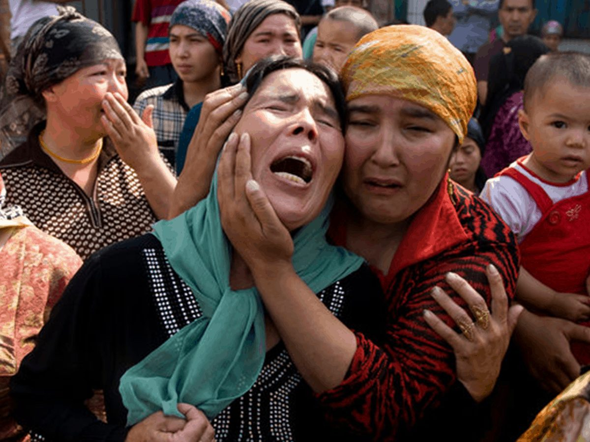
Left: a Uyghur boy at a protest by Uyghurs living outside China. Photo: via Vox. Right: Uyghur women in grief.
Beijing's reign of terror does not stop at China's borders; its cost is measured not only in detention numbers, but in broken families.
“Over the past three years and more, there has not been a single violent terrorist case in Xinjiang.”
“China's policy in Xinjiang has been positively recognized across the international community.”
Ministry of Foreign Affairs of the People's Republic of China, 18 June 2020
STATE MEDIAHow Beijing shows it: a March 2019 state media video filmed inside a "vocational education and training centre" in Karakax (Moyu) County. Detainees in identical uniforms are presented as 'students' who had been "infected" by extremist thought. Video: China News Service, CC BY 4.0, via Wikimedia Commons (excerpt, muted).
Investigators found
China's treatment of the Uyghurs amounts to crimes against humanity. Human Rights Watch, 2021
“…arbitrary and discriminatory detention of members of Uyghur and other predominantly Muslim groups … may constitute international crimes, in particular crimes against humanity.” OHCHR, 2022, para. 148
Detainees face political indoctrination and forced cultural assimilation. Amnesty International, 2021, p. 3
FILE 06The world responds
Sanctions, and their limits
Several Western states have moved beyond condemnation and imposed tangible consequences on Beijing.
Coordinated sanctions
The EU, UK, Canada and US impose travel bans and asset freezes on Chinese officials, including Zhu Hailun, the official who approved the camp telegram (Alecci, 2021).
Beijing retaliates
China bans eight European politicians and two scholars from entering the country (Alecci, 2021).
Forced labour import ban
The US presumes that goods made wholly or partly in Xinjiang were made with forced labour, and bars them unless importers prove otherwise (Gurney, Jones and Maurer, 2022).
These measures demonstrate the West's willingness to impose economic and diplomatic costs on Beijing; however, they target individual officials and supply chains rather than the camp system itself.
UN Human Rights Council · 6 October 2022
The world declined to discuss it
A motion to debate the UN's own Xinjiang report failed. Muslim-majority states including Indonesia, Pakistan, Qatar and the United Arab Emirates voted against it.
17 for a debate11 abstained19 against
Pakistan rejected the motion citing the risk of alienating China (Jakarta Post, 2022). Amnesty International's Secretary General, Agnes Callamard, said the vote protects the perpetrators of human rights violations rather than the victims (Amnesty International, 2022).
FILE 07Australia
Concern, without help
Even nations that openly criticise China have done little for the families torn apart by its policies. Australia has long held grave concerns about Xinjiang and has pledged to continue to raise concerns(SBS News, 2022). Yet when Mamutjan, a Uyghur father living in Australia, contacted the Department of Home Affairs for help, they said they could not help him because he is not a permanent resident(Amnesty International, 2021, p. 11).
The Chinese Communist Party's repression of the Uyghurs is driven by decades of discrimination, historical separatist tensions and, most significantly, a desire to erase Uyghur identity, which Beijing disguises as counter-terrorism. Since 2014, it has escalated into pervasive surveillance, the arbitrary detention of an estimated one million or more people and political indoctrination in camps; moreover, its impacts extend far beyond Xinjiang, tearing families apart across the world.
Ultimately, international responses have been partially effective at punishing individual officials; however, they have failed to dismantle the camp system or reunite the families it has destroyed.